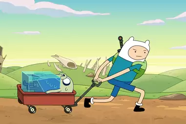
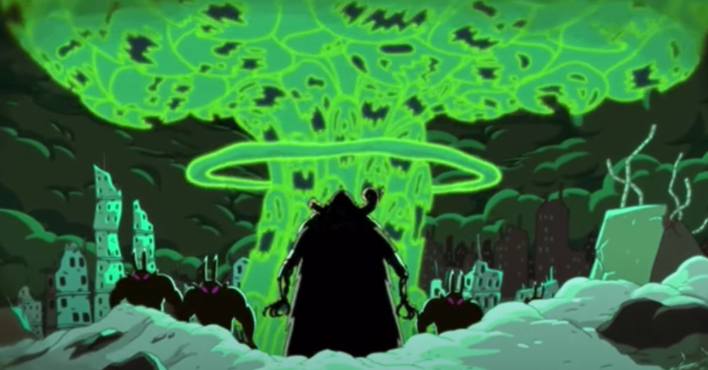

New Perspectives on Cartoons
How My Perception of Cartoons has Changed
By analyzing Finn from Adventure Time, I learned about the deeper meanings involved with the show. Finn's actions display a noticeable character development over the course of the show. This is a type of show that is not commonly watched in chronological order, but I think it would make more sense if watched in this way. This is because of Finn's character development. When watching shows in the future, I would like to focus more on watching the episodes chronologically. If I had to analyze another cartoon character, my main option would be a character from Spongebob. I don't want to analyze one of these characters though, and I would rather watch a short cartoon series that I've never seen before. When watching cartoons as a child, I did not analyze the characters' actions for deeper meanings. This makes it difficult to pull meaning from these cartoons now that I am trying to analyze them.
The Revision Process
A major strength of my analysis was that I included evidence to support my ideas. I used a list that I found online which listed many bad things Finn had done across the show. This makes my analysis more credible, and it adds some variety to the content so the reader stays engaged. The primary audience of this analysis would likely be people in their late teens and early twenties who are starting to develop interest in Adventure Time. They may want to learn some background about the deeper meanings behind the show. This analysis may not be useful to extreme fans of Adventure Time because these fans would likely already be familiar with the concepts within my analysis.